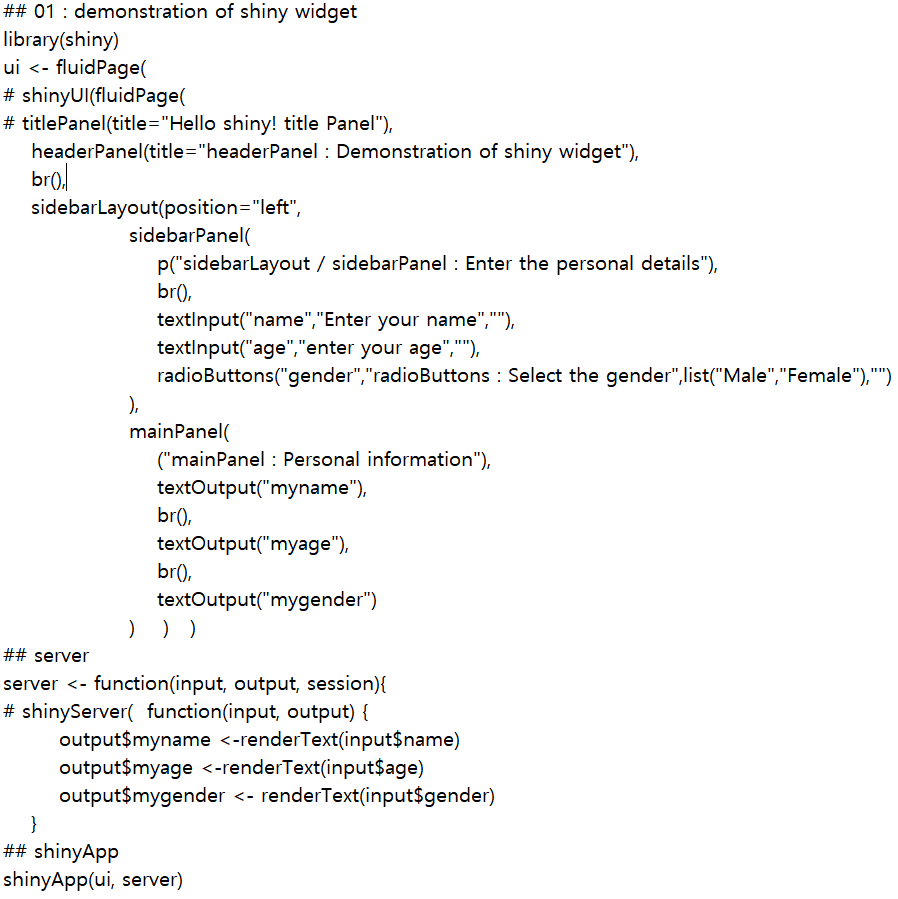

* 기본 source code 사례 : 
DT, Process, Solution 관리해야 할 대상 도출 계획대비 실적의 수준을 벗어나 이러한 결과에 대한 여러가지 통계 기법과 머신러닝 솔루션을 통하여 현상을 보다 객관적으로 진단하고, 이러한 현상이 지속될 경우 어떠한 결과가 예측되는 지를 분석하며 그러한 문제가 어디에서 발생하고 있는지와 무엇을 관리해야 하는 지를 직관이 아닌 데이터 분석을 통하여 도출할 수 있다. 이후에 이러한 내용을 기반으로 혁신에 활용한다.